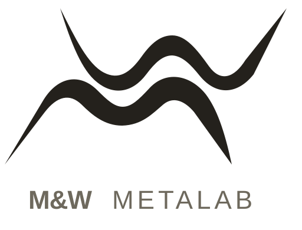
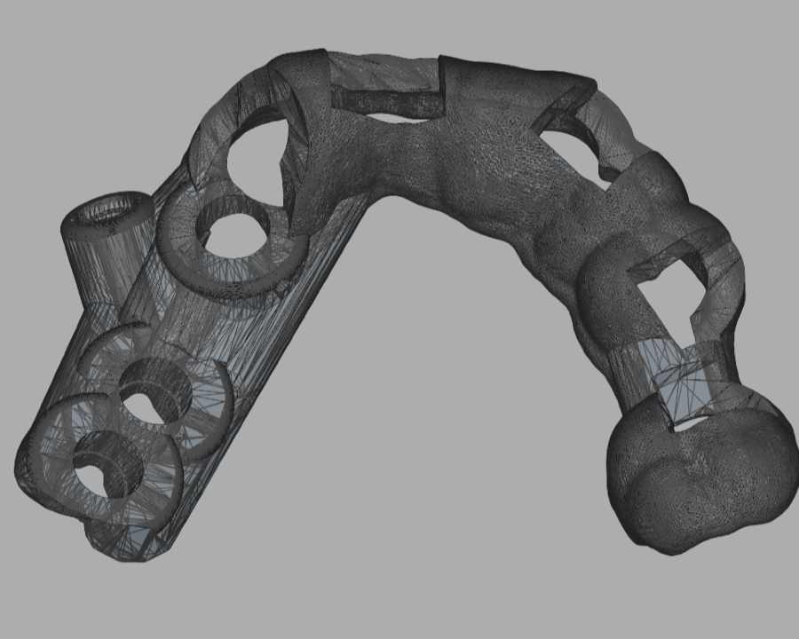
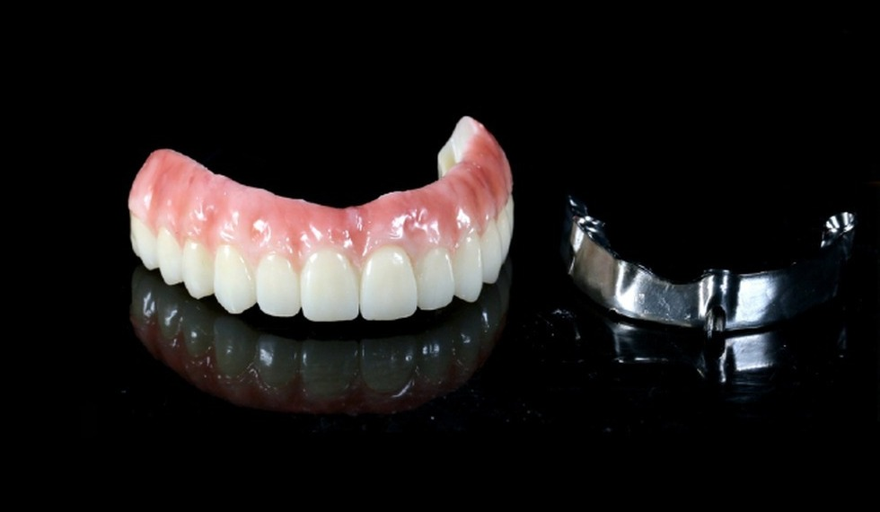

Fixed Restorative CAD
Single crowns, bridges, veneers, inlays, onlays, copings, and restorative CAD files prepared for technical review and production.

MW DenTech Barcelona, SpainDigital dental design for labs and clinics
Menu-priced CAD services for routine digital work, with scoped planning support for complex rehabilitation cases.
MW DenTech supports dental laboratories and digitally equipped clinics that need external design help across crown and bridge, esthetic work, implant cases, splints, full-mouth occlusal rehabilitation, and full-arch implant rehabilitation.
Core CAD support is separated from strategic rehabilitation workflows, so routine design cases and multi-stage reconstruction cases can be scoped clearly from the start.
Compact, production-oriented CAD support for cases where the clinical position and treatment direction are already defined.
Single crowns, bridges, veneers, inlays, onlays, copings, and restorative CAD files prepared for technical review and production.

Smile design, digital wax-up, anterior tooth morphology, texture, symmetry, and SmileCloud-supported esthetic workflows.

Custom abutments, implant crowns, screw-retained restorations, emergence profile design, and implant restorative CAD support.

Single implant guide CAD with additional implant sites priced by scope, plus partial-arch guided surgery design when the implant plan and sleeve protocol are clear.

Michigan splints, stabilization splints, night guards, deprogrammers, and routine appliance CAD when the bite position is already prescribed.
Strategic, case-specific planning support for cases that need sequencing, verification, and provisional-to-final coordination.
 AxisGuide
AxisGuide
Selected MRI/CBCT/STL-informed planning support for clinician-led TMJ-sensitive restorative, orthodontic and full-mouth rehabilitation cases.
Learn about AxisGuide Full-mouth
Full-mouth
Comprehensive rehabilitation for worn dentition, VDO alteration, occlusal plane correction, additive wax-up, provisional design, and final restorative CAD coordination.

Full-archAll-on-X and terminal dentition workflows, including full-arch implant planning, surgical guide design, fixation pin planning, immediate loading provisional design, verification workflows, and final full-arch prosthesis support.

We make the practical details explicit before CAD work starts, so your team knows what will be delivered and when it can be reviewed.
Complex dental records are sensitive. We keep payment, clinical files and project scope separated so labs and clinics can collaborate without exposing unnecessary patient information.
CaseHub centralizes structured case intake, tooth selection, file upload, status tracking, case discussion and delivery files in one private workspace. It is intended for anonymized or minimized clinical records whenever possible, and the beta is invitation-only while MW DenTech validates the workflow with selected labs and clinics.
Collect case code, prescription summary, selected teeth, deadline, urgency and first files before MW starts scope review.
Keep partner questions, MW notes, file delivery and review feedback connected to the same case reference.
Access is introduced selectively after the first collaboration is scoped and data-transfer expectations are agreed.
Routine design work is priced for recurring collaboration. Advanced planning remains quote-first so imaging review, sequencing, verification and provisional stages are scoped with the care they require.
These anonymized examples show the type of records, planning outputs and clinical boundaries used when a case moves beyond menu-priced CAD.


Published-from prices help clients test repeatable CAD work. Listed EUR prices are net professional fees excluding VAT/IVA unless stated otherwise. Quote-first items are scoped individually when sequencing, imaging review or staged provisional planning affects the workload.
VAT / IVA note: Spanish IVA is applied where required, with the standard rate currently 21%. Eligible EU B2B clients may be invoiced under reverse charge when valid VAT details are confirmed; other applicable taxes are handled according to client location and invoice status.
Built around real dental CAD economics. Prices refer to CAD design and planning support only; printing, manufacturing, components, shipping, customs duties, VAT/IVA, and other taxes are not included unless stated in the written quote or invoice. Volume pricing is available after recurring volume, file quality, and revision patterns are proven.
Menu-priced CAD work can be priced from the menu after file review. AxisGuide, full-mouth and full-arch workflows are scoped first because the records, sequencing and verification steps define the real workload.
Select a menu-priced CAD service or identify the case as AxisGuide, full-mouth, or full-arch rehabilitation.
We check file quality, libraries, bite records, imaging, production method and transfer path before work is scheduled.
Menu-priced CAD services receive payment and invoice instructions after scope confirmation; complex cases receive a written quote or deposit request.
Your team reviews the CAD or planning files before manufacturing or the next clinical stage.
Best for repeatable work where records, bite position, implant libraries and production method are already clear.
Priced from the published net menu after file review and scope confirmation.
Request menu quoteBest for cases where sequencing, imaging review, provisional strategy or multidisciplinary coordination affects the scope.
Scoped individually before written quote, deposit or staged payment instructions.
Submit for quoteSend intraoral scans, bite records when relevant, output format, CAD/CAM system, material or production method, and requested turnaround.
Send scans, photos, bite or jaw-relation records, provisional or wax-up references, VDO or occlusal goals, and MRI/CBCT when included in scope.
Send CBCT/DICOM, implant plan or proposed positions, scanbody or MUA records, fixation requirements, immediate provisional objective and final prosthesis goal.
Send one representative case first. We confirm whether it fits menu pricing or needs a scoped quote before design starts.
Short answers for labs and clinicians before sending the first case.
MW DenTech provides CAD design and planning support. Prices are net CAD/design fees; printing, milling, components, shipping, customs duties, VAT/IVA and other taxes are not included unless separately arranged and shown in the written quote or invoice.
It is routine CAD with a clear service category, usable records, prescribed bite position, known production method and predictable deliverables.
Complex cases depend on sequencing, imaging review, provisional strategy, verification records and interdisciplinary coordination, so scope must be confirmed before pricing.
One technical revision is included when the original records and instructions are unchanged. New records, a new bite position, a changed implant plan, changed treatment direction or added deliverables are handled as a scope update.
Use an agreed upload link or secure transfer channel. Remove patient-identifying information whenever possible and keep payment notes free of clinical details.
AxisGuide is available for selected clinician-led TMJ-sensitive rehabilitation cases. It provides a structured imaging-informed pathway to plan, test and verify a proposed mandibular position before staged occlusal reconstruction.